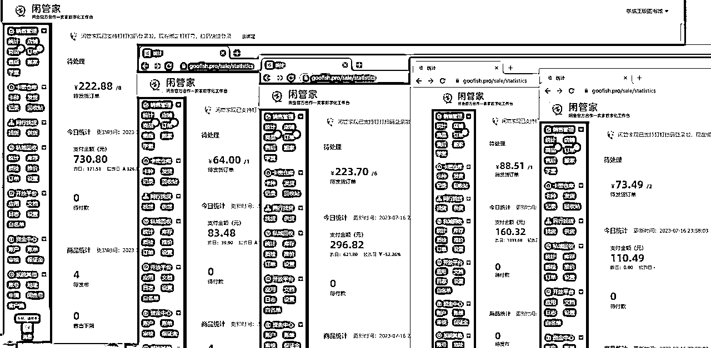
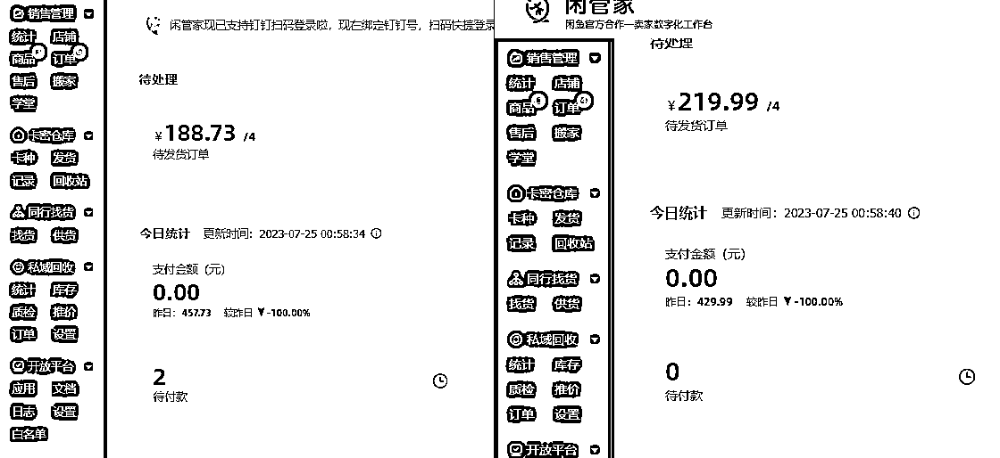
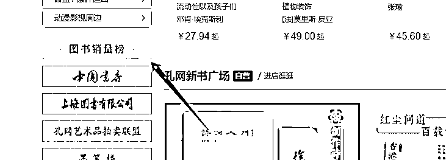
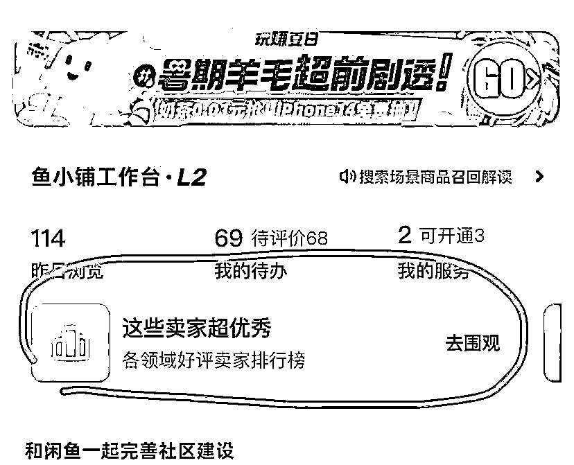
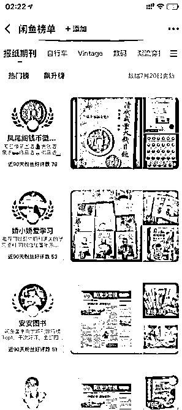
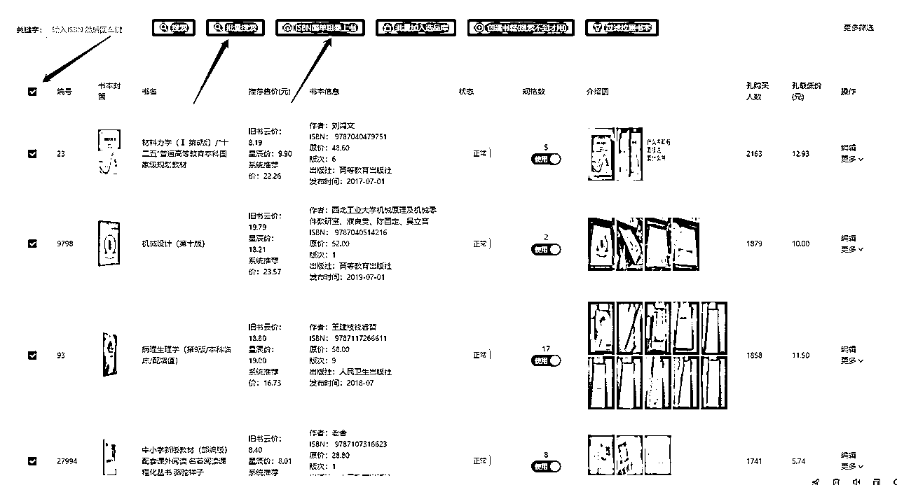
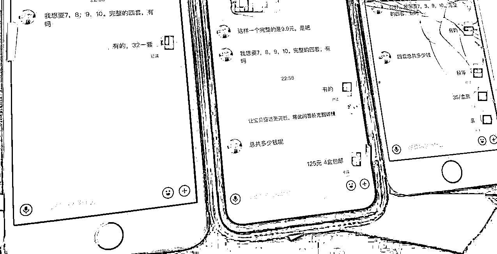
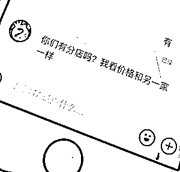
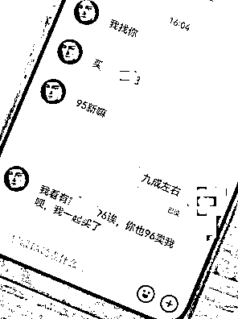

来源：https://ia6apeqevi.feishu.cn/docx/Takqd7Ep2oEqQFxPbhrcfO0JnOe
大家好，我是时光，90后高级电子商务师、创业培训师资、高级营销师、现主要深耕2个项目，一个是快手无人直播，2个工作室稳定运营中。第二个就是个人副业在做的“闲鱼二手书”前期开了3个店，平均每天800-2000的GMV ，截至今天，做了4个月了，月单店稳定2000左右毛利，这段时间又开了2个，孔夫子遇到的稳定货源，他帮代发，节省了我买书的时间，基本每天有单丢过去就行了，轻松赚差价。
第一感谢生财有术、提供很好的一个平台。
第二感谢@老瞿（最懂二手书的男人），带我进入闲鱼二手书这个行业。
第三感谢@华少（老瞿背后的男人），强大的闲鱼二手书系统，让我解放双手上书。
我个人认为，闲鱼二手书，虽然说单号天花板低，但是店铺数量多了以后就有数算了。


今天总结一下批量上书后精细化运营带来的稳定出单。
关于如何办理相关资质证件、注册开店，在这里不做过多阐述。可以点击下面蓝字直达，或者在星球内搜索闲鱼二手书航海手册查阅。
二手书航海手册：https://search01.shengcaiyoushu.com/docx/R8eUd7TcModS7RxYaogceiZgnOb
出版物相关问题：https://articles.zsxq.com/id_ashjch8dg4ud.html
上书系统软件：
我是如何从批量上书后精细化运营带来稳定出单的，只讲干货。
可能很多人陷入了一个盲区，认为只要我每个号批量怼满500本，3000本就能持续出单了，有些号当然可以，但是如何带来稳定出单呢？先从选品开始讲
准备一个小号
就是普通的购物闲鱼用户号（不是卖家号），不要用自己卖书的号，很多卖家看到你是同行去关注他，直接把你送黑名单去了，哈哈哈。
（1）坚持3-5天去搜索相关关键词，比如说：官场小说、考研资料。七年级上册教材、初一教材（目前比较畅销的教材）等。
（2）在找的同时把卖得好的卖家关注、把左下角的：收藏、评论都评论上。
（3）这时候闲鱼就会给你打上一个想买书的用户标签，就会使劲的在首页给你推荐相关的书籍
结合上面第1步，每天用小号去看闲鱼推什么书，哪个同行卖什么书火爆，我一般是搬“想要”超过50的，看到之后
（4）第一时间找到相关货源，拼dd、孔网等，不怎么推荐用多某鱼因为基本都是他们的纸箱和二维码。
（5）1：1模仿上书，同行怎么描述的你也跟着怎么描述，字面改动，意思相同就行。如果你有好的文案也可以配上去。

在孔网的左侧分类下面
可以借用工具自动化，爬取ISBN码教程点击蓝字：
https://articles.zsxq.com/id_8slzs7v19krw.html
爬到排行前30的，用华少的软件批量怼上去就行了。
拼多多、多抓鱼、等其他平台都一样，把ISBN码抓取下来。
用小号点进去关注他们，每天都看看他们什么书卖的好。同样复制到自己的店铺。


我个人习惯用华少的系统上书，把获取到销量高的商品能够更快速的发到很多个店铺上，节约使劲成本，找好20个爆品书，10分钟不到几个号都上完了。上书系统软件：

上完后多多少少都会有人咨询或者购买，这时候要根据你的商品的曝光、浏览进行数据分析。
每天注意观察你上的品
（1）把没有曝光、没有浏览的品毫不犹豫直接下架。
（2）把有曝光有浏览但是没有想要和成交的商品做优化（图片？标题？描述？价格？是哪些因素影响了用户购买？）
（3）把有销量、有浏览、有曝光的1个品，每天用闲鱼币去做推广，我一般是拉满，10000闲鱼币（相当于是四块多），推广一次够烧两三天了。
（4）把有销量、有浏览、有曝光的30个品，每天用超级擦亮、2块钱一天，直接投放，随便做一单都回本了。
（5）适当的进行降价0.1-0.1之间，使用户的手机弹出降价通知点进去看。
把手里运行店铺的品全部复制到你手上正在运营的店铺。日常必做的方式再做一遍。
（1）根据你那个店铺订单收货城市最多的，假设A店铺卖的书广东广州收件最多，第二个号就选发货位置是广东广州，依次类推。
我经常一个客户问完我所有店铺，哈哈，也有的客户选报高价的那家店铺下单，有时候低价不一定赢。



1、咨询成交、催付、
有很多人问了，很多人都是半天才回，那肯定不行，买家早去下一家了。
1.已读不回，发个”亲“过去看看是不是秒已读，如果是，那就是基本还有顾虑或者对比，可以问他”亲是有什么顾虑码？“等强调我们的优势在哪里。
2.发了未读，有可能是去忙了或者什么样，多发几次，争取成交。
3.及时发货，选一些发货快的卖家
4.产生售后问题的，尽量协商补偿费用解决，如果就几块钱什么的，直接书送给他，让他给个好评。金额大的补偿些费用给他。不给他制造麻烦的机会。到后面他还感谢你。
5.
总结就是：批量测品、多账户铺品、日常细节运营。
欢迎大佬指正，完~